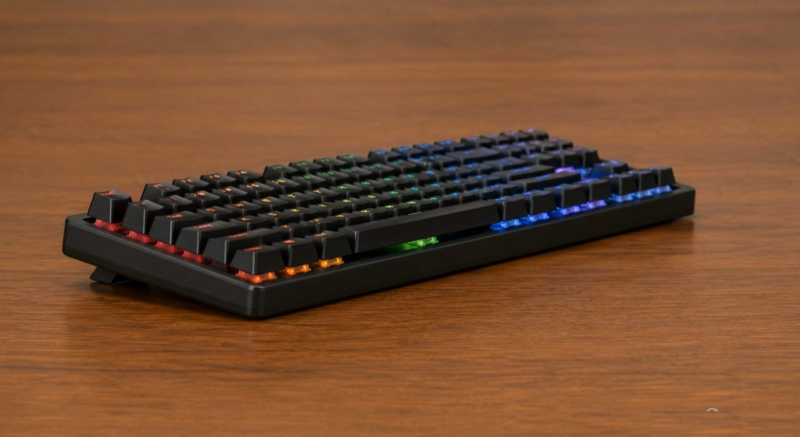

00 — ASSEMBLED
Every key
hides a system.
This is VOID87 fully built — a tenkeyless mechanical board doing what keyboards do, sitting quiet on the desk. Underneath the matte black shell is a five-layer stack tuned for speed, sound, and feel. Scroll, and we'll take it apart in front of you.
01 — KEYCAPS
Caps off first.
Doubleshot PBT keycaps, shine-through legends. Thin walls at the top, thick at the stem — the geometry that keeps a five-year-old keycap sounding like a new one. Lift them and the board's actual personality shows up underneath.
02 — SWITCHES
One board,
a full spectrum.
Sixteen million colors per switch, individually addressable — not a single backlight bar, eighty‑seven independent ones. Each housing is hot-swappable: pull a switch with the included tool, push in another, no soldering, no waiting.
03 — PLATE
The plate sets
the feel.
A CNC-cut aluminum switch plate locates every switch with zero play, then passes vibration straight down into foam instead of letting it ring through the case. This is the difference between "clacky" and "controlled."
04 — PCB & DAMPENING
Silence,
engineered in.
A hotswap PCB with per-switch LED drivers sits on two layers of acoustic foam. The foam kills hollow PCB ping and case resonance before sound ever leaves the chassis — most of what you "hear" in a keyboard is actually decided here.
05 — CHASSIS
Down to
the bones.
A gasket-mounted bottom case with a built-in level vial — because a keyboard that isn't sitting flat is a keyboard typing slightly wrong. Five adjustable feet, weighted base, zero desk-walk during a ranked match or a deadline sprint.
REASSEMBLED
Built to be
opened again.
Every layer you just saw is meant to come apart with a stock tool, not a warranty void sticker. Swap switches, swap caps, re-lube the stabilizers in a year — VOID87 stays serviceable for as long as you want to keep typing on it.